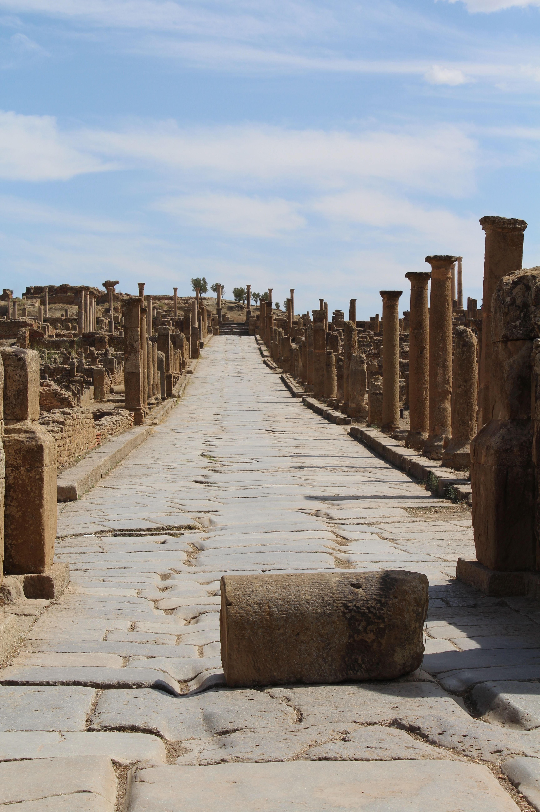

Ancient Archaeology
Welcome to ANARCH,we are love history, architecture, ancient archaeological sites and civilisations.Learn more about the heritage of four remarkable locations: Jerash, Athens, Plovdiv and Laodicea.

| Site | Country | Period |
|---|---|---|
| Jerash | Jordan | Roman Period |
| Athens | Greece | Ancient Greek Period |
| Plovdiv | Bulgaria | Roman Period |
| Laodicea | Turkey | Hellenistic and Roman Period |